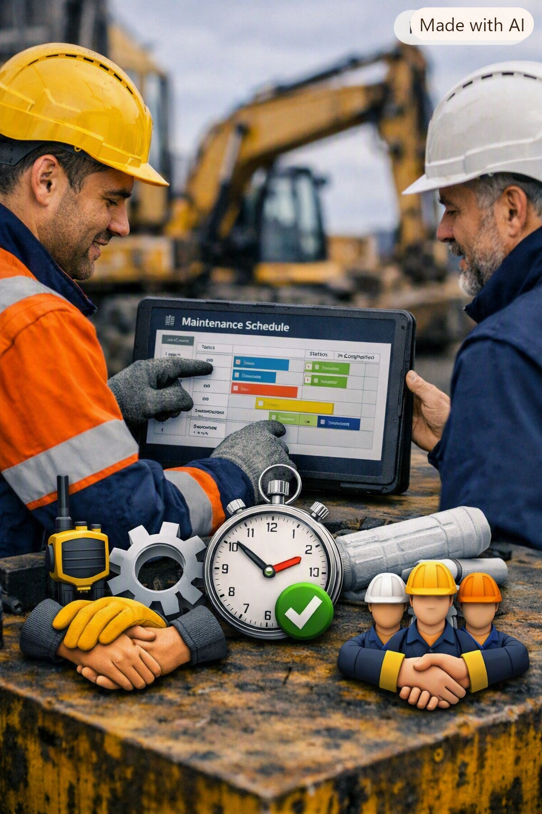
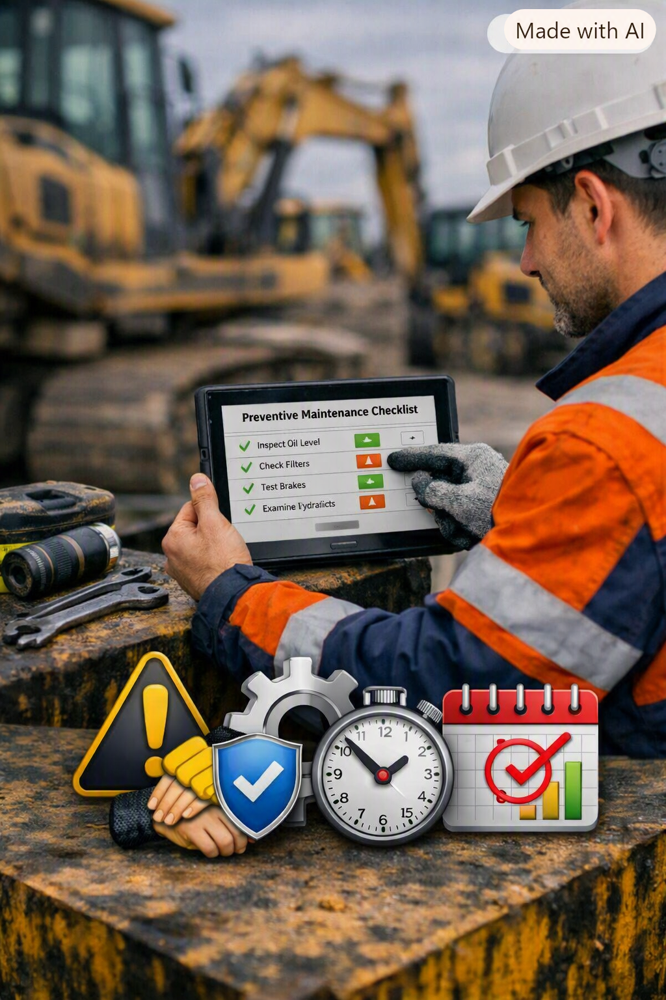

NOSOTROS
Somos un equipo de desarrolladores comprometidos con la transformación digital de los procesos de mantenimiento en maquinaria pesada.
Misión
Desarrollar una herramienta de software que permita organizar, controlar y consultar de manera eficiente la información relacionada con maquinaria y equipos pesados.
El sistema busca facilitar la comunicación entre operadores, técnicos y jefes de área mediante el registro de hojas de vida, controles preoperacionales, cronogramas de mantenimiento y alertas oportunas, con el propósito de prevenir accidentes, evitar fallas y reducir los tiempos de inactividad de los equipos.
Visión
En los próximos tres años, MAQUITRACK busca consolidarse como una herramienta de software reconocida por facilitar la gestión, organización y mantenimiento de maquinaria pesada. La plataforma pretende destacarse por mejorar la comunicación entre operadores, técnicos y jefes de área, contribuyendo a una operación más segura, eficiente y basada en información confiable.
Valores de MaquiTrack
Comunicación
Comunicación
Facilitar una comunicación clara, oportuna y efectiva entre operadores, técnicos y líderes para que cada persona conozca qué debe hacer y cuándo debe hacerlo.

Eficiencia
Eficiencia
Optimizar los tiempos y recursos utilizados en los procesos de mantenimiento, reduciendo paradas técnicas que puedan ser prevenidas.

Prevención
Prevención
Promover el mantenimiento y seguimiento oportunos de los equipos para identificar posibles fallas antes de que afecten su funcionamiento.
Trabajo en equipo
Trabajo en equipo
Fortalecer la colaboración entre operadores, técnicos y líderes para facilitar la toma de decisiones y mejorar los procesos.